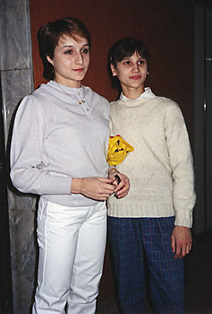

Ivelina Raikova (BUL)
1988 Balkan Championships AA Bronze Medalist

Ivelina (right) with teammate
Diana Dudeva
at the 1987 Chunichi Cup.
Competition Results
1984
Jr. Friendship Tournament (Druzhba): 4th Team, 11th AA
1986
Balkan Championships: 7th AA, 3rd B
Belgian Gym Masters: 7th AA, 3rd FX
Chunichi Cup: 15th AA
FRG-BUL Dual Meet: 1st Team, 6th AA
Goodwill Games: 8th AA, 5th B, 8th UB
Jr. European Championships: 6th AA, 5th UB, 6th FX, 7th B
NED-BUL Dual Meet: 1st Team, 3rd AA
Tokyo Cup: 2nd UB
1987
Chunichi Cup: 4th AA, 5th FX, 6th B
Tokyo Cup: 2nd FX
World Championships: 5th Team
1988
Balkan Championships: 3rd AA
French International: 12th AA
Olympic Games: 5th Team
This page was created on December
30, 2006 and was last updated on October 04, 2019.
© Gymn Forum